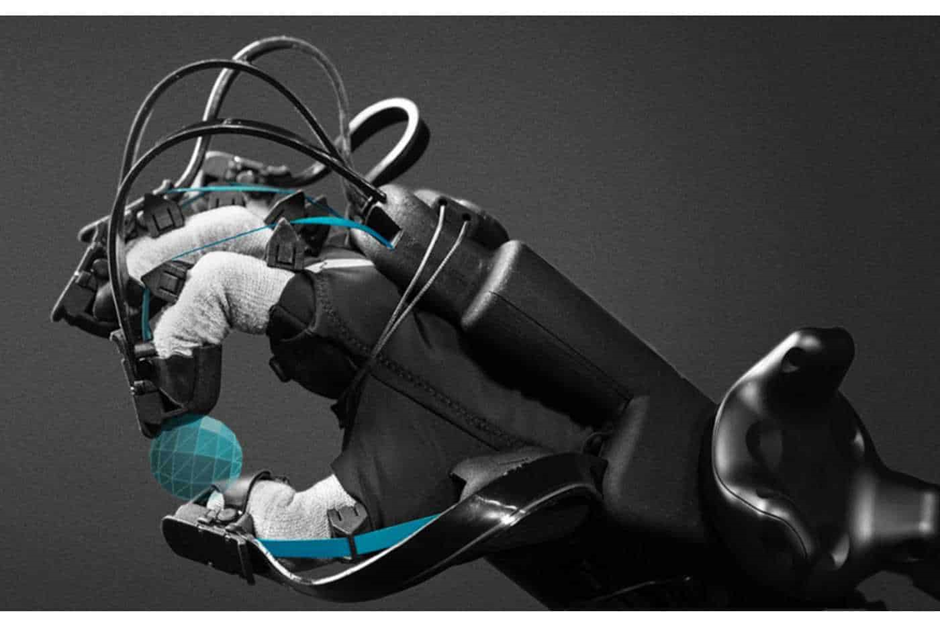

Virtual reality (VR) has become a powerful tool for education, providing immersive experiences that enable students to learn and explore in ways that were previously impossible.
However, while VR offers a visually stunning and highly engaging learning experience, it could not historically replicate the sense of touch - an important sensory input that is essential for many types of learning.
This is where haptic feedback comes in. By providing a tactile experience that enables students to interact with virtual objects as if they were real, haptic feedback can enhance the educational benefits of VR and enable new types of learning that were previously impossible.
In this blog post, we'll explore the importance of haptic feedback in VR education and how it can enhance the learning experience for students.
Firstly, let's define haptic feedback.
What is Haptic Feedback?
Haptic feedback is a technology that uses vibrations, pressure, or other tactile sensations to provide a sense of touch to users in virtual and augmented reality environments.
Essentially, it allows users to feel virtual objects as if they were real.
Haptic feedback can take many forms. For example, a haptic glove might use pressure sensors to simulate the feeling of picking up a virtual object, while a haptic suit might use vibration to simulate the feeling of raindrops hitting the body.
Now, let's delve into why haptic feedback is important for VR education.
Why is Haptic Feedback important for VR Education?

why is haptic feedback important Haptic feedback is becoming increasingly important in VR applications because it adds a new dimension to the user experience.By providing a sense of touch, haptic feedback can make virtual environments feel more immersive and engaging, which can improve learning outcomes and increase user satisfaction.
It can also help users interact more realistically with virtual objects, which is especially important for training simulations in fields like medicine, engineering, and aviation.
Some of the benefits of using haptic feedback in VR education include:
Enhanced Immersion
One of the key benefits of haptic feedback is that it enhances immersion. VR already provides a highly immersive experience, but haptic feedback takes it to the next level.
It allows students to physically interact with virtual objects and feel the feedback of their actions. Thus, creates a sense of presence and realism that cannot be achieved through visuals alone.
For example, imagine a biology class where students are learning about the structure of a cell. With haptic feedback, students can physically touch and manipulate the different components of the cell.
They can feel the different textures of the cell membrane, cytoplasm, and nucleus. This enhances their understanding and retention of the material because they are engaging multiple senses in the learning process.
Better Learning Outcomes
Another important benefit of haptic feedback in VR education is that it can improve learning outcomes. Research has shown that multisensory learning is more effective than unisensory learning (i.e., learning through a single sense).
Haptic feedback provides an additional sensory input that can reinforce learning and improve memory retention.
For example, a physics class where students are learning about the laws of motion can benefit from haptic feedback.
By feeling the force of a virtual object in their hands, students can better understand concepts such as velocity, acceleration, and momentum.
This multisensory approach can lead to a deeper understanding and better retention of the material.
Improved Accessibility
Haptic feedback can enhance the accessibility of VR education. Students with disabilities, such as blindness or hearing loss, can still benefit from haptic feedback because it provides a tactile input that they can feel.
This allows them to engage with the virtual environment and learn alongside their peers.
In addition to its educational benefits, haptic feedback can also provide practical applications in industries such as medicine and engineering.
Surgeons can use haptic feedback to practise surgical procedures in a virtual environment, allowing them to hone their skills without risk to patients.
Engineers can use haptic feedback to test prototypes and simulate real-world scenarios, improving the safety and effectiveness of their designs.
However, there are some challenges to implementing haptic feedback in VR education. One of the main challenges is the cost of haptic devices.
High-quality haptic devices can be expensive, making them inaccessible to some schools and educators.
Additionally, haptic feedback can be complex to program and integrate into VR experiences, requiring specialised knowledge and expertise.
Despite these challenges, the benefits of haptic feedback in VR education make it a worthwhile investment.
The immersive experience and multisensory learning it provides can enhance understanding and retention of material, while also providing practical applications in various industries.
Sum Up
In conclusion, haptic feedback is crucial for VR education because it enhances immersion, improves learning outcomes, and enhances accessibility.
While there are challenges to implementing haptic feedback, the benefits make it a worthwhile investment for educators and schools.
As technology continues to evolve, we can expect to see more innovative uses of haptic feedback in VR education, creating even more engaging and effective learning experiences for students.